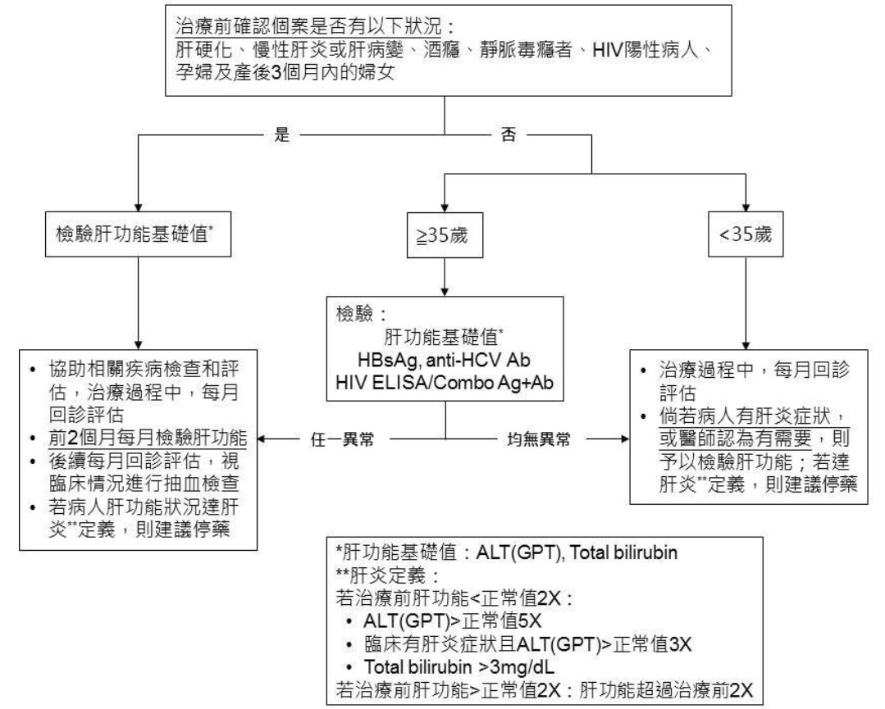

source: Pocket Medicine, 2022; 台灣肺結核診治指引
- 一個月內新生兒：都要治療
- Open TB：都要檢查
- Smear (-), culture (+)：<13歲、免疫力低下接觸者和同住家人要檢查
- Culture(-)：照CXR即可
- 肺外結核、指標個案<5歲：≥5歲接觸者照CXR
- 1個月至未滿2歲：TST x 2 (一個月內、暴露滿八週後且與前次間隔八週）
- 判讀標準：已打BCG ≥ 10mm，未打BCG, HIV, 接受anti-lymphokines 或其他免疫抑制治療者 ≥ 5mm為陽性
- 治療期滿後TST < 5mm再補打BCG
-
2歲以上：暴露滿八週後IGRA
-
If screening test ⊕ and no risk factors, confirm prior to treatment; if ⊕ w/ risk factors, proceed to treatment (CID 2017;64:11).
-
Prior to treatment of latent TB, active TB must be ruled out with, at a minimum, ROS for symptoms (cough, fever, night sweats, weight loss), physical exam, and CXR (though may be normal in immunosupp.)
-
依照證據建議「常規」進行LTBI 的診斷與治療的第一類優先族群包括：愛滋感染者、全年齡層的結核病接觸者、接受抗腫瘤壞死因子治療的病人、洗腎的病人、準備做器官或血液腫瘤移植的病人，以及矽肺症病人。
- 第二類優先族群，支持其進行LTBI 治療的證據比較薄弱，但是診斷及治療LTBI 的益處可能大於傷害。在資源充足的狀況下，若已經推動第一類優先族群的LTBI 診斷與治療，可以將資源投注在此類族群，這類優先族群包括：醫療從業人員、結核病高負擔國家來的移民、矯正機關收容人、遊民以及非法藥物使用者。
- 潛伏結核感染陽性若未進行LTBI 治療，排除接觸者檢查即發現為活動性結核病(無法以LTBI 治療來預防)，追蹤每10 萬人年發生率：5-12 歲為840，13-29 歲1,630，30-64 歲880，65-79 歲1,050，80 歲(含)以上可高達1,820
- 由於仍然有為數不少的細菌學確診結核病個案，其LTBI 檢驗結果是陰性，故許多指引都指出，當病人出現疑似結核病的症狀，就算LTBI 檢驗結果是陰性，也不能排除病人有結核病的可能
- Conversion: defined as individuals who initially had a negative test with a subsequent positive result
- Reversion: defined as individuals with an initial positive test with a subsequent negative test
Quote
In a patient population at increased risk for tuberculous disease, such as candidates for organ transplantation, serial testing with interferon-γ release assays before transplant has revealed conversion and reversion rates of reactivity that undermine the ability to determine true-positive rates. [@Roth2016Serialtesting]
- TST硬結 ≥ 5 mm 判定為陽性反應
- 在免疫功能不佳，如CD4 淋巴球數低於200 cells/μl 的感染者，在接受抗愛滋病毒藥物治療，並且CD4 淋巴球數增加到大於200 cells/μl 後，建議針對TST 及IGRA 原本呈現陰性反應的病人再做一次檢驗
- IGRA檢驗結果為陽性或不確定 (indeterminate, mitogen-nil <0.5)者，建議加入LTBI 治療
- 1HP + Biktarvy
- 3HP + DTG-based regimen
- 3HR or 4R + DTG BID
- 9H
| Scenario |
Prophylaxis Regimen |
| PPD/IGRA ⊕ (regardless of HIV status) |
1st line: Rifampin × 4 mo or INH/rifampin daily x 3 mos or INH/rifapentine weekly × 12 wks) (MMWR 2020; 69:1)
Alternative: INH + vitamin B6 × 6-9 mos |
| Contact case known or suspected to have MDR TB) |
No proven regimen: ? PZA + EMB, ? PZA + FQ |
-
✓ LFTs monthly if receiving INH (risk ↑ w/ age; Chest 2005;128:116): if AST/ALT ↑ 5× ULN or sx (nausea, vomiting, abd pain) → stop TB meds & re-eval
-
若指標為INH 抗藥，建議選擇4R 處方；RMP 抗藥則選擇9H 處方；多重抗藥性結核病(MDR-TB)個案之接觸者，為預防接觸者感染MDR-TB 發病，建議轉介至抗藥性結核病醫療照護體系(TMTC)，使用fluoroquinolone 類藥物作為LTBI 治療
- 3 類族群不適用3HP：孕婦（目前兩大臨床試驗已證實未對寶寶產生影響，但仍需更大量的經驗累積）、INH 或RMP 抗藥指標個案的接觸者、及未滿2歲兒童
- HP FDC 劑型限於體重50 公斤(含)以上使用固定劑量(不依體重或年齡調整)，每次3 顆，共12 次。
- 1HP（每日1 次INH+RPT，共28 次）：僅使用於HIV 感染者及本署專案計畫

- 肝炎(ALT >正常值5 倍或臨床有肝炎症狀且ALT>正常值3 倍)造成永久停藥有1%。以年齡層分析，20 歲以下發生率非常低，小於0.3%；超過30 歲發生比例超過2%，主要是60-69 歲年齡層的發生率最高達4%。
- 服用3HP 約有41%的病人抱怨有任何一種類流感症狀，皮疹約有11%。
- 若治療過程發生定義肝炎的程度，建議先停藥衛教病人，了解病人是否有其他肝炎的風險並予以治療（例如慢性病毒性肝炎），給予支持療法，通常2 週後肝指數會下降1/2，若臨床上沒有不舒服或危險因子，可以2 週甚至1 個月後再追蹤，直到回到正常值上限的2 倍之內即可。
- 全身性不適等藥物相關的過敏反應仍然是需要重視的，若符合過敏定義，「不」建議進行同樣處方的re-challenge （可以嘗試轉換其他處方）。
- 其餘非過敏反應的不良反應，則視臨床需要給予支持療法，停藥與否視個別病人是否能接受及臨床嚴重度而決定。
- 由於3HP/3HR 是由INH 與RPT/RMP 組成，與4R 含有RMP 一樣，極少數可能有骨髓抑制的情況，故當病人有肝病或其他醫療考慮如貧血或血小板相關問題，建議在用藥前檢驗CBC/DC 基礎值，再決定治療中的追蹤方式及頻率。
- 使用3HP 最常遇到的不良反應是非肝炎之其他不良反應，例如：疲倦、噁心、頭痛、無力等
- 如果發生過敏反應，則建議停藥並視臨床需要給予支持療法。
- 若遇到發燒等類流感症狀，最可能的還是3HP 的不良反應，經驗上可先確認病人是否在服藥後幾小時發生，一天內即緩解，那表示藥物相關的機會最大。預先讓病人知道可能的類流感症狀，開立解熱鎮痛劑(例如普拿疼)，讓病人碰到發燒先觀察反應，而不是跑急診。部分病人噁心嘔吐厲害，服藥前可使用止吐劑，來緩解服藥當下的不適。
- 各處方間若因副作用或其他因素，得相互轉換；除指標個案對原治療處方抗藥外，轉換後處方按已服用比例，接續服用滿該處方的療程，並儘可能不要短少。